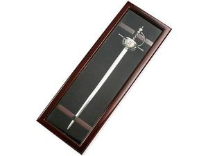

Нож «Шпага Конкистадоров»
Описание товара
 Этот замечательный нож отнюдь не бутафория. Это настоящий клинок — копия
своих великих прадедушек. Впрочем, он несколько меньше по размеру, но за
ним стоит красивая легенда, которую Вам услужливо предоставит Интернет.
Вскрывать конверты с его помощью — ни с чем не сравнимое удовольствие.
Длина клинка 23 см.
Характеристики товара
- Цвет: серебристый
- Материал: нержавеющая сталь
- Размер товара: 350 × 125 × 62 мм.
- Вид нанесения: шильд спектрум, металлостикер
- Описание упаковки: деревянная коробка коричневого цвета
- Размер упаковки: 390 × 162 × 97 мм
- Количество в упаковке: 1 шт